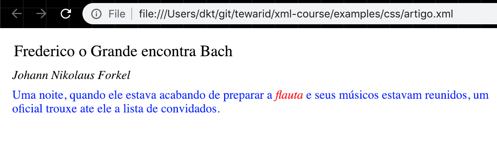

eXtensible Markup Language
Devendra Tewari
February 09, 2005
eXtensible Markup Language
Conteúdo
XML bem Formada – Sintaxe XML
XML Válida – DTD e Esquema
Acesso Programático – DOM e SAX
Transformando XML – CSS e XSL
Bibliografia
Livros
Professional XML – Wrox e Ciência Moderna – Vários Autores
XML Conceitos e Aplicações – Benoît Marchal – QUE e Berkeley
Aprendendo XML – O’Reilly e Campus – Erik T. Ray
Sites
Estado de padrões do W3C
| 1996 | 1997 | 1998 | 1999 | 2000 | 2001 | 2002 | |
| CSS | 1.0 | 2.0 | |||||
| DOM | Level-1 | Level-2 | |||||
| HTML | 4.0 | ||||||
| MathML | 1.01 | 2.0 | |||||
| NS | 1.0 | ||||||
| RDF | Parcial | ||||||
| SMIL | 1.0 | 2.0 | |||||
| SOAP | |||||||
| SVG | 1.0 | ||||||
| XHTML | 1.0 | ||||||
| XLink | 1.0 | ||||||
| XML/DTD | 1.0 | ||||||
| XMLBase | 1.0 | ||||||
| XMLProtocol | |||||||
| XPATH | 1.0 | ||||||
| XPointer | 1.0 | ||||||
| XQuery | |||||||
| XS | 1.0 | ||||||
| XSL:FO | 1.0 | ||||||
| XSLT | 1.0 |
Sintaxe da XML – XML Bem Formada
O que é XML?
XML -
eXtensibleMarkup LanguageBaseada em marcadores (tags) como HTML
Por Exemplo
Porque XML?
XML é uma HTML melhorada?
Nenhum marcador predefinido
- Extensível
Sintaxe mais rígida
- Fácil validar
Quem controla XML?
É um padrão aberto
Padronizada pelo World Wide Web Consortium (W3C)
Evoluiu da SGML (padrão da ISO - ISO8879)
Recomendação do W3C desde Fevereiro de 1998
Uso de XML
Armazenagem de Documentos
Intercâmbio de Dados
Entre base de dados e aplicação
Entre aplicações
Armazenagem de Dados
Base de dados
Arquivos de configuração
Outros Padrões Relacionados a XML
Espaços identificadores (namespaces)
XPATH
Folhas de Estilo (style-sheets)
CSS
XSL
DOM e SAX
XLink e XPointer
Trabalhando com XML
Browser XML
Editor XML
Parser XML
Processador de XSL
Estrutura de um Documento XML
A declaração
xmlElementos
Atributos
Comentários
Entidades XML
Usadas para criar dados predefinidos
A ocorrência de uma entidade no documento XML é substituída pelo seu valor pelo parser
A ocorrência começa com
&e termina com;A XML utiliza entidades para representar alguns caracteres reservados pela linguagem, como
>(>) e<(<)Novas entidades podem ser criadas usando uma DTD
Atributos Especiais
xml:space
- Preservar ou não espaços em branco duplicados
xml:lang
- Linguagem natural do valor texto de um elemento
Instruções de Processamento
Podem ser usadas para associar arquivos CSS e XSL
Iniciam com
<?e terminam com?>Depois de
<?aparece a aplicação destinatáriaDepois da aplicação aparece o texto da instrução
Exemplo
Seção CDATA
CDATA significa dados caractere
É usada para colocar texto qualquer como scripts de código, como VBScript ou JScript, dentro da XML
É delimitada pelo
<![CDATA[e]]>Uma seção CDATA não pode ser aninhada dentro da outra
XML Bem Formada
Condições
Apenas um elemento raiz
Elementos sem sobreposição
Início e fim de elementos corretamente demarcado
Nome de elementos e atributos corretamente formado
Valor do atributo demarcado com aspas duplas
Texto caractere sem caracteres reservados ou inválidos
Projetando Documentos XML
Identificar nomes para coisas e conceitos
Identificar hierarquia das coisas
- Identificar os relacionamentos entre coisas
Definir propriedades das coisas
Isso é modelagem orientado objeto
- Documentos XML podem ser gerados exportando uma hierarquia de objetos
Quando usar Atributos para Propriedades
Vantagens
Possível restringir valor usando DTD
Validação de ID e IDREF
Requer menos espaço
Fácil processar usando DOM e SAX
Desvantagens
Valores simples
Não suporta atributos sobre atributos
Quando usar Elementos Filhos para Propriedades
Vantagens
Suporta valores complexos
Suporta atributos sobre atributos
Extensível quando modelo de dados muda (um livro vários autores)
Desvantagens
Requer mais espaço
Mais difícil processar
Exercício 1
Como utilizar XMLSpy
Crie um catálogo de livros usando XML
Sugira um modelo para o documento
Crie o documento usando o modelo
XML Válida – DTD
Porque Utilizar DTD
DTD significa Definição do Tipo de Documento
XML bem formada não basta
Precisa haver uma forma de definir o vocabulário do documento XML com precisão
Parsers XML podem usar a DTD para validação de uma instância do documento XML
Editores de XML (como XMLSpy) podem usar a DTD para fazer valer as regras contidas nele na hora de editar um documento XML
Associando DTD com Documento XML
Usando a instrução de processamento
DOCTYPEDuas formas
DTD Interna
- DTD fica dentro do documento XML
DTD Externa
DTD fica num arquivo separado
Facilmente aplicada a vários documentos XML
Componentes de DTD
Sintaxe da DTD não utiliza XML
Uma DTD contém os componentes a seguir
ELEMENT
ATTLIST
ENTITY
NOTATION
Declaração ELEMENT
Declarar um novo tipo de elemento XML
<!ELEMENTseguido pelo nome do elementoNome tem que ser identificador XML válido
Nome seguido pela definição de conteúdo
Exemplos
Declaração ELEMENT – Modelo de Conteúdo
Para especificar conteúdo dentro de um elemento
Contém uma combinação de
Texto – indicado usando
#PCDATAElementos filhos
Operadores
Exemplos
Declaração ATTLIST
Atributos são propriedades de um elemento
Declarados usando a sintaxe
Exemplo
Atributos do tipo ID, IDREF e IDREFS
ID é usado para definir um nome único no documento
- Uso de um ID é sempre
#REQUIRED
- Uso de um ID é sempre
IDREF refere-se a um ID declarado no documento
- Usado para criar relacionamentos um para um
IDREFS refere-se a vários ID ao mesmo tempo
- Usado para criar relacionamentos um para vários
Exemplos
Atributos do tipo ENTITY e ENTITIES
Apontam para Entidades definidas no mesmo documento usando declaração ENTITY
ENTITIES é uma lista de ENTITY separadas por espaços
Exemplo
O documento XML vai conter
Atributos tipo NMTOKEN e NMTOKENS
NMTOKEN são fichas nomeadas
O processamento e checagem de validade das fichas fica por conta da aplicação
Exemplo
Atributo tipo NOTATION
O atributo desse tipo é usado em conjunto com a declaração NOTATION (notação)
Uma notação declara um formato e o aplicativo externo que deve processá lo
Exemplo
DTD Interna
Elementos declarados na DTD interna sobrepõem elementos da DTD externa
Uso menos frequente porque
Ocupa espaço em cada documento
Difícil alterar por estar em vários documentos XML
Exemplo Escola
Criar DTD para representar dados de uma escola
Coisas
Escola
Estudante
Professor
Aula
Limitação de DTD
Difícil de escrever e entender
Difícil processar programaticamente
Difícil de estender
Sem suporte para espaços identificadores (namespace)
Nenhum suporte para tipos de dados
Nenhum suporte para herança
Exercício 2
- Crie uma DTD para o documento XML de catálogo de livros criado no Exercício 1
XML Válida – Esquemas
O que é Esquema XML
Um esquema XML contém
Definição de tipos
Declaração de elementos
Permite
Validar elementos e atributos XML e seus valores
Estender um esquema existente
É uma recomendação do W3C
Componentes Primários
Definição de Tipos Simples
Definição de Tipos Complexos
Declaração de Atributos
Declaração de Elementos
Componentes Secundários
Declaração de Notações
Definição de Grupos de Atributos
Definição de Restrições de Identidade
Definição de Grupos de Modelos
Componentes Auxiliares
Anotações
Grupos de Modelos
Partículas
Curingas (wildcards)
Uso de Atributos
Estrutura do Arquivo de Esquema
O arquivo tem a extensão xsd
Contém um elemento raiz chamado
schemaElemento
schemapode conter atributosattributeFormDefaultelementFormDefaultidtargetNamespaceversionxmlns(mais de uma ocorrência)
Associando Esquema ao Documento XML
Um documento XML pode ser considerado como uma instância de um esquema
O elemento raiz do documento XML deve declarar o espaço identificador ao qual ele pertence e isso deve corresponder ao espaço identificador especificado pelo atributo
targetNamespaceno esquemaO elemento raiz deve declarar o espaço identificador
http://www.w3.org/2000/10/XMLSchema-instancee atribuir para o atributoschemaLocationdeste espaço identificador o nome do arquivo contendo o esquema
Espaço Identificadores (namespaces)
Evitam ambiguidade e colisão de nomes quando um elemento XML utilizar esquemas diferentes
O elemento declara a utilização de um esquema usando o atributo
xmlnsou a formaxmlns:prefixoO
prefixoé utilizado no nome de todos os elementos declarados no esquemaO espaço identificador é identificado utilizando um URI (identificador universal de recursos)
Geralmente, o URI é um URL
Definição de Tipos Simples
Pode ser usada na declaração de
Atributos
Elementos simples contendo apenas texto
Por Exemplo
Restringindo Valores Usando Expressões Regular
Podemos restringir valores utilizando expressões regulares
Uma expressão regular é especificada utilizando o elemento
xs:patterndentro do elementoxs:restrictionExemplo -
cpf.xml
Esquema para validar CPF - cpf.xsd
<xs:schema xmlns:xs="http://www.w3.org/2001/XMLSchema">
<xs:element name="cpf">
<xs:simpleType>
<xs:union memberTypes="tipoCPF tipoCPFFormatado"/>
</xs:simpleType>
</xs:element>
<xs:simpleType name="tipoCPF">
<xs:restriction base="xs:string">
<xs:pattern value="[0-9]{11}"/>
</xs:restriction>
</xs:simpleType>
<xs:simpleType name="tipoCPFFormatado">
<xs:restriction base="xs:string">
<xs:pattern value="[0-9]{3}\.[0-9]{3}\.[0-9]{3}-[0-9]{2}"/>
</xs:restriction>
</xs:simpleType>
</xs:schema>Definição de Tipos Complexos
Usada para declarar elementos contendo
Atributos
Tipo do Conteúdo (elementos filhos)
Tipos complexos podem estender outros tipos simples ou complexos
Exemplo
Declaração de Atributos
Uma associação entre um nome e um tipo simples
Pode conter um valor padrão
Exemplo
Declaração de Elementos
É uma associação entre um nome e tipos simples ou complexos
Pode estar contida dentro de uma definição de tipo complexo
Equivalente as declarações ELEMENT e ATTLIST do DTD
Exemplo
Declaração de Notações
É uma associação entre um nome e um identificador de notação
Uma notação serve para identificar conteúdo não XML e o programa que processa o conteúdo
Exemplo
Definição de Grupos de Atributo
É usada para reutilizar grupos de atributos em várias definições de tipos complexos
Exemplo
Definição de Restrições de Identidade
É uma associação entre um nome e qualquer tipo de restrição como chave primária, chave única ou chave estrangeira
Utiliza a especificação XPATH para indicar os registros aos quais se aplica a restrição
Exemplo
Anotações
Contém informação sobre o modelo
Usadas por leitores humanos ou máquinas
Exemplo
Grupos de Modelos
Compostos por uma lista de
Elementos
Curingas
Grupos de Modelos
Temos três tipos de grupos de modelos
Sequência
Conjunção
Disjunção
Sequência
Todos os elementos deveriam ser especificados e seguem uma sequência rígida
Exemplo
Conjunção e Disjunção
Conjunção
Todos os elementos deveriam ser especificados mas não seguem uma sequência rígida
Uma conjunção é criada usando elemento
xs:all
Disjunção
Qualquer um dos elementos precisa ser especificado
Uma disjunção é criada usando o elemento
xs:choice
Definição de Grupos de Modelos
É uma associação entre um nome e um grupo de modelo
Facilita a reutilização do mesmo grupo de modelo em vários tipos complexos
Exemplo
Curingas
O elemento
xs:anyfornece um mecanismo para introduzir um curinga para o conteúdo dos elementosO elemento
xs:anyAttributeé um curinga para qualquer atributo do espaço identificador especificado no atributonamespacedo elementoExemplo
Uso de Atributos
Usado para especificar se a utilização de qualquer atributo é
Requerido
Opcional
Proibido
O atributo pode ter um valor fixo (constante)
Exemplo
Tipos de Dados Internos
- Tipos primitivos internos fazem parte da especificação de Esquemas XML
| string | boolean | decimal |
| float | double | duration |
| dateTime | time | date |
| gYearMonth | gYear | gMonthDay |
| gDay | gMonth | hexBinary |
| base64Binary | anyURI | QName |
| NOTATION |
Tipos Derivados Internos
- Tipos derivados a partir de tipos de dados primitivos internos
| normalizedString | ID | IDREF | IDREFS |
| nonPositiveInteger | int | unsignedInt | positiveInteger |
| nonNegativeInteger | long | short | negativeInteger |
| unsignedLong | byte | integer | ENTITY |
| unsignedShort | Name | NCName | ENTITIES |
| unsignedByte | token | NMTOKEN | NMTOKENS |
| language |
Exemplo Escola - Esquema
Mesmos dados como no caso da DTD
Esquema permite maior flexibilidade
Definição das chaves
Única
Primária
Estrangeira
Definição e extensão de tipos simples e complexos
Exercício 3
Crie um esquema XML para a DTD de catálogo de livros criada no Exercício 2
Estude tópicos avançados
Expressões Regular
Tipos abstratos
Redefinir esquema usando elemento
xs:redefineImportando esquemas usando elemento
xs:includeDerivando tipos usando elementos
xs:extensionexs:restrictionRestringindo derivação de tipos usando atributos
finaleblockdo elementoxs:complexTypeFormas de restringir valores de tipos simples (facets)
Acesso Programático - DOM
DOM – Document Object Model
Representa todo conteúdo do documento XML como uma árvore
Cada elemento, texto de um elemento, atributo, comentário, instrução de processamento etc é representado como um nó nesta árvore
É uma especificação recomendada pelo W3C
Objetos do DOM
O Node representa um nó na árvore do DOM
NodeList e NamedNodeMap são utilizados para agregar nós
O DOM é composto de vários tipos de objetos que herdam de Node
| Element | Attr | Text | CDATAsection |
| EntityReference | Entity | ProcessingInstruction | Comment |
| Document | DocumentType | DocumentFragment | Notation |
Objeto Node
O objeto Node disponibiliza várias propriedades para navegar a árvore do DOM
nodeType: Tipo do objeto representado pelo nó
parentNode: Objeto pai do nó atual
childNodes: Lista de nós filhos do nó atual
firstChild: Primeiro nó filho
lastChild: Último nó filho
previousSibling: Nó anterior no mesmo nível que o atual (último irmão)
nextSibling: Nó posterior no mesmo nível que o atual (próximo irmão)
attributes: Lista de atributos caso o nó atual tiver atributos
nodeName: Nome do nó
nodeValue: Valor texto do nó
Métodos do Objeto Node
Disponibilizados pelo objeto Node para inserir, duplicar, remover e substituir outros objeto Node
appendChild: Adiciona um novo nó filho.
cloneNode: Cria cópia de um nó.
hasAttributes: Retorna verdadeiro se o nó tiver atributos.
hasChildNodes: Retorna verdadeiro se o nó tiver filhos
insertBefore: Insere um nó filho antes do nó filho especificado
isSupported: Retorna verdadeiro se tiver suporte para um recurso do DOM
normalize: Normaliza a estrutura do nó
removeChild: Remove um nó filho
replaceChild: Substitui um nó filho
Objetos NodeList e NamedNodeMap
Objeto NodeList
Fornece uma lista de nós
É uma coleção indexada de nós começando com o índice 0
Objeto NamedNodeMap
Fornece uma coleção de nós
Os nós podem ser acessados usando nomes
Os nós também podem ser acessados usando um índice numérico
Objeto Attr
Representa atributos
Objeto Attr herda do objeto Node mas não faz parte da árvore de documento
- Por isso atributos parentNode, previousSibling e nextSibling do objeto Node tem valor nulo
Em MSXML 3.0 a interface é chamada de IXMLDOMAttribute
Objeto Element
Representa um elemento XML
Herda do objeto Node
- Tem todas as características e operações do objeto Node
Contém métodos para recuperar objetos do tipo Attr pelo nome ou pelo índice
Propriedades
- tagName: Nome do elemento
Objetos CharacterData e Text
Objeto CharacterData
Representa dados caractere usando Unicode (UTF-16)
Estende o objeto Node
Objeto Text
Representa dados texto dentro de um elemento.
Herda do Objeto CharacterData
Objeto Document
Representa um documento XML
Herda do objeto Node
Acrescenta algumas propriedades a mais
documentElement: Elemento raiz
doctype: Tipo do documento
Acrescenta alguns métodos
Métodos específicos do parser MSXML 3.0
loadXML: Carregar texto XML
load: Carregar arquivo XML
Usando DOM para criar Documentos XML
Usaremos MSXML nos exemplos
O exemplo a seguir
Utiliza o objeto DOMDocument para criar um novo documento XML
Insere uma nova instrução de processamento
Cria nó do tipo
NODE_ELEMENTe do tipoNODE_ATTRIBUTEGera a saída
Exemplo usando MSXML Parser versão 3.0
Dim oDom As New MSXML2.DOMDocument
Dim oElemento As MSXML2.IXMLDOMNode
Dim oAtributo As MSXML2.IXMLDOMNode
oDom.appendChild oDom.createProcessingInstruction( _
"xml", "version=""1.0""")
Set oElemento = oDom.appendChild( _
oDom.createNode(NODE_ELEMENT, "catalogo", ""))
Set oAtributo = oElemento.Attributes.setNamedItem( _
oDom.createNode(NODE_ATTRIBUTE, "data", ""))
oAtributo.Text = "12/01/2001"
Set oElemento = oElemento.appendChild( _
oDom.createElement("livro"))
Set oAtributo = oElemento.Attributes.setNamedItem( _
oDom.createAttribute("nome"))
oAtributo.Text = "Programando em Java"Usando DOM para ler Documentos XML
Usaremos MSXML neste exemplo
O objeto DOMDocument é usado para ler XML
- O método load carrega um arquivo XML
No exemplo ilustramos
Como tratar erros usando atributo parseError
Como ler todos os nós de um documento XML usando um método recursivo
Ler documento DOM usando método recursivo
oDom.Load "nome do arquivo XML"
If oDom.parseError.errorCode = 0 Then
Debug.Print parse(oDom.documentElement, 0)
End If
Function parse(oNode As IXMLDOMNode, Nivel As Long) As String
Dim i As Long
Dim s As String
s = s & String(Nivel, vbTab) & oNode.nodeName & vbCrLf
For i = 0 To oNode.Attributes.length - 1
s = s & String(Nivel + 1, vbTab) _
& oNode.Attributes(i).nodeName _
& "=" & oNode.Attributes(i).nodeValue & vbCrLf
Next
For i = 0 To oNode.childNodes.length - 1
s = s & parse(oNode.childNodes.Item(i), Nivel + 1)
Next
parse = s
End FunctionResultado da Leitura
Aqui mostramos a saída gerada pela leitura do documento XML
O documento XML utilizado foi:
Resultado
catalogo livro nome=Programação Java autor nome=Paulo Junior
Exercício 4
- Use o DOM para ler o catálogo de livros criado anteriormente e mostrar nome de todos os livros dentro de um controle como ListBox
Acesso Programático - SAX
Simple API for XML
Está baseada em eventos
É um padrão de fato, não é um padrão do W3C
A versão preliminar chamado de SAX
A versão atual é chamado SAX2
Oficialmente disponível para Java
Tem suporte para espaços identificadores
Lendo um Documento XML Usando SAX
Utilizamos parser SAX do pacote MSXML 3.0
Implementamos a interface
ContentHandlerpara receber e tratar callbacks (eventos) SAXUsamos os eventos
startElement
endElement
Para executar o exemplo podemos chamar o método
saxParsepassando como parâmetro o nome do arquivo XML
Lendo um Documento XML Usando SAX em VB
Implements IVBSAXContentHandler
Const MAX_DEPTH = 100
Dim nDepth As Long, sArray(MAX_DEPTH) As String
Private Sub IVBSAXContentHandler_endElement( _
strNamespaceURI As String, strLocalName As String, _
strQName As String)
If strQName = sArray(nDepth - 1) Then 'Found closing tag
nDepth = nDepth - 1
End If
End Sub
Private Sub IVBSAXContentHandler_startElement( _
strNamespaceURI As String, strLocalName As String, _
strQName As String, ByVal oAttributes As MSXML2.IVBSAXAttributes)
sArray(nDepth) = strQName
Debug.Print String(nDepth, vbTab) & strQName
nDepth = nDepth + 1
End Sub
Public Function saxParse(ByVal fileName As String) As Boolean
Dim oReader As New SAXXMLReader
Set oReader.contentHandler = Me
oReader.parseURL fileName
If nDepth = 0 Then
saxParse = True
Else
saxParse = False
End If
End FunctionLendo um Documento XML Usando SAX - Resultado
catalogo
autores
autor
primeiroNome
sobreNome
...
livros
livro
autor
primeiroNome
sobreNomeXML e Java
O mundo Java tem diversos APIs e parsers XML
APIs
JAXP da SUN
JDOM
Parsers DOM
XML4J da IBM
Xerces do Apache
Parsers SAX
- Xerces do Apache
Usando JAXP - DOM
JAXP gera uma árvore DOM usando um parser SAX
Pacotes JAXP utilizados no exemplo
javax.xml.parsers
- Classes DocumentBuilder, DocumentBuilderFactory e ParserConfigurationException
org.w3c.dom
- Classes Document, Node, NamedNodeMap e NodeList
org.xml.sax
- Classe SAXException
Usando JAXP DOM - Exemplo Java
import java.io.*;
import javax.xml.parsers.*;
import org.w3c.dom.*;
import org.xml.sax.*;
class LeitorDOM {
public static void main(String args[]) throws ParserConfigurationException, IOException, SAXException {
DocumentBuilder leitor = DocumentBuilderFactory.newInstance().newDocumentBuilder();
Document documento = leitor.parse("catalogo.xml");
processNode(documento);
}
private static void processNode(Node no) {
System.out.println(no.getNodeName());
if (no.hasAttributes()) {
NamedNodeMap attr = no.getAttributes();
for (int i=0; i < attr.getLength(); i++) {
System.out.println(attr.item(i).getNodeName());
}
}
if (no.hasChildNodes()) {
NodeList nos = no.getChildNodes();
for (int i=0; i < nos.getLength(); i++) {
processNode(nos.item(i));
}
}
}
}Usando JAXP – SAX
JAXP vem com um parser SAX
- Isso não impede a utilização de outro parser SAX qualquer
Pacotes JAXP utilizados no exemplo:
javax.xml.parsers
- Classes SAXParser, SAXParserFactory e ParserConfigurationException
org.xml.sax
- Classe SAXException
org.xml.sax.helpers
- Classe DefaultHandler
Usando JAXP SAX - Exemplo Java
import java.io.*;
import javax.xml.parsers.*;
import org.xml.sax.*;
import org.xml.sax.helpers.*;
class LeitorSAX extends DefaultHandler {
public static void main(String args[]) throws SAXException, ParserConfigurationException, IOException {
SAXParser leitor = SAXParserFactory.newInstance().newSAXParser();
leitor.parse("catalogo.xml", new LeitorSAX());
}
public void startElement(String namespaceURI, String lName, String qName, Attributes attrs) throws SAXException {
System.out.println(qName);
}
}- Empty methods have been pruned
Exercício 5
- Utilize SAX para ler o catálogo de livros criado anteriormente e mostrar o nome de todos os livros dentro de um controle como ListBox
JDOM
Limitações do DOM
Independente da Linguagem
Não foi desenhado com a linguagem Java em mente
Não faz uso das classes de coleção existentes
Herança de classes estrita
- Demais objetos são derivados do objeto Node
Baseado em Interface
Vantagens da JDOM
Para Java
Hierarquias de classes inexistentes
Método Pull em Microsoft .NET
A API SAX utiliza callbacks para avisar quando elementos são encontrados
O método Pull utiliza chamadas explícitas a um método que recupera um elemento após outro
Implementada pela classe XmlTextReader do espaço identificador System.Xml
O exemplo utiliza a linguagem C## da plataforma .NET
Método Pull para ler documento XML em C#
using System;
using System.Xml;
public class TestXMLReader {
public static void Main() {
XmlTextReader reader = new XmlTextReader("teste.xml");
while (reader.Read()) {
if (reader.NodeType == XmlNodeType.Element) {
Console.WriteLine("Found Element: " + reader.Name);
if (reader.HasAttributes) {
while (reader.MoveToNextAttribute()) {
Console.WriteLine("Found Attribute: " + reader.Name);
}
}
}
}
reader.Close();
}
}Transformando XML – CSS
Cascading Style Sheets (CSS)
CSS significa Folhas de Estilo Em Cascata
É utilizada com HTML
Pode ser utilizada com XML
Determina a formatação visual dos elementos
Qualquer navegador com suporte a CSS pode formatar os elementos
IE 5.x ou superior
Netscape 6.x ou superior
Padrão atualmente no nível 2 (CSS2)
Exemplo de uso da CSS com XML
Vamos abrir este documento XML em IE 5.0
<?xml version="1.0" encoding="ISO-8859-1"?> <?XML:stylesheet type="text/css" href="artigo.css"?> <artigo> <titulo>Frederico o Grande encontra Bach</titulo> <autor>Johann Nikolaus Forkel</autor> <paragrafo> Uma noite, quando ele estava acabando de preparar a <instrumento>flauta</instrumento> e seus músicos estavam reunidos, um oficial trouxe a lista de convidados. </paragrafo> </artigo>
Exemplo de uso de CSS - artigo.css
instrumento { display: inline }
artigo, titulo, autor, paragrafo { display: block }
titulo { font-size: 1.3em }
autor { font-style: italic }
artigo, titulo, autor, paragrafo { margin: 0.5em }
instrumento { font-style: italic }
Seletores
Uma folha de estilo contém um conjunto de regras compostas de
Seletores
Blocos de declarações
Um seletor especifica um ou mais elemento XML
Exemplo
artigo,titulo,autoreparagrafosão seletoresA declaração CSS começa depois de
{e termina com}
Tipos de Seletores
Seletor Universal
Seletor de tipo
Seletor de classe (válido somente para HTML)
Seletor de ID
Mais Tipos de Seletores
Seletor de descendente
Seletor de filho
Seletor de irmão adjacente
Seletor de atributos
Pseudo-elementos e Pseudo-Classes
Pseudo-classes
:first-child,:link,:visited,:hover,:active,:focuse:lang
Pseudo-elementos
:first-line,:first-letter,:beforee:after
Valor das Propriedades
Propriedades estão contidas dentro de um bloco de declaração
Valores de alguns tipos básicos
Comprimento
- Um número seguido de uma unidade de medida como
em,px,cmemm
- Um número seguido de uma unidade de medida como
Porcentagem
Cor
Um valor hexadecimal, por exemplo,
#FFFFFFé a cor brancaUma especificação RGB explicita, por exemplo,
rgb(0, 0, 255)ourgb(0%, 0%, 100%)Palavras chaves
URL (para imagens)
Propriedades da Caixa
Os elementos são pintados dentro de uma caixa, retângulo por padrão
Display
display: blockcria um novo bloco contendo o texto do elementodisplay: inlineevita criar um novo bloco e mostra o texto dentro do bloco do elemento paidisplay: nonesuprime o elemento
Margem (externo à borda)
margin-top,margin-right,margin-bottomemargin-left, ou apenasmargin
Mais Propriedades da Caixa
Borda
Tipo
none,dotted,dashed,solid,double,groove,ridge,inset, ououtset, por exemplo,border: solid, dotted, double, inset;Largura
border-top-width,border-right-width,border-bottom-widtheborder-left-width, ou apenasborder-width
Padding (enchimento interno à borda)
padding-top,padding-right,padding-bottomepadding-left, ou apenaspadding
Propriedades de Texto e Fonte
Nome da fonte -
font-familyComprimento da fonte -
font-sizeEstilo e peso -
font-styleefont-weightAlinhamento do Texto -
text-alignevertical-alignEndentação e Altura de Linha -
text-indenteline-height
Propriedades da Cor e Fundo
Cor do primeiro plano -
colorCor de fundo -
background-colorCor da borda -
border-colorImagem de fundo -
background-image
Importando uma Folha de Estilo
Uma folha de estilo pode ser importada dentro da outra
Regras especificadas no arquivo atual sobrepõem as regras do arquivo importado
Utilizamos
@importpara fazer a importaçãoExemplo
Exercício 6
- Crie um documento CSS para mostrar o catálogo de livros dentro do browser
Transformando XML – XSL
eXtended Stylesheet Language
CSS faz transformações básicas
Queremos transformar
XML para XML
XML para HTML
Agrupar, filtrar, calcular e classificar
Não estamos falando em deixar de usar a CSS
Conceito de XSL
O processo de usar XSLT
Ler documento XML
Aplicar Transformações
Gravar documento resultante
![]()
Exemplo de XSLT - Documento Original
Vamos aplicar transformações neste documento
Exemplo de XSLT
<?xml version="1.0" encoding="UTF-8"?>
<xsl:stylesheet version="1.0" xmlns:xsl="http://www.w3.org/1999/XSL/Transform" xmlns:msxsl="urn:schemas-microsoft-com:xslt">
<xsl:template match="/">
<html>
<body>
<xsl:apply-templates/>
</body>
</html>
</xsl:template>
<xsl:template match="catalogo">
<table width="100%" border="1">
<tr>
<th><p>Livros</p></th>
</tr>
<xsl:for-each select = "livros/livro">
<tr>
<td>
<p><xsl:value-of select="@nome"/></p>
</td>
</tr>
</xsl:for-each>
</table>
</xsl:template>
</xsl:stylesheet>Exemplo de XSLT - Resultado
| Livros |
|---|
| Professional XML |
| XML By Example |
XPATH
Padrão base para XSLT
Usado para selecionar elementos e atributos
Trata documento como sistema de arquivos (elementos = pastas)
Um caminho pode ser relativo ou absoluto
Permite usar expressões lógicas e funções
Exemplo
Caminhos
| Caminho | Descrição |
|---|---|
/ |
Elemento raiz |
// |
Seleciona todos os nós descendentes |
* |
Qualquer elemento |
. |
Nó atual |
| |
Seleciona entre várias caminhos (OU) |
Controlando a Saída
Podemos controlar a saída do processador XSLT usando
xsl:outputPodemos escolher a saída atribuindo os seguinte valores para o atributo method
xml
text
html
Deve aparecer logo após
xsl:stylesheetExemplo
Definindo Templates
Documento XSL contém pelo menos um elemento
xsl:templateO atributo
matchdesse elemento seleciona o nó que será processadoAo atributo
matchdeve ser atribuído uma expressão XPATH válidaDentro do elemento
xsl:templatepodemos ter um elementoxsl:apply-templatespara aplicar os demais templates
Variáveis e Parâmetros
Elemento
xsl:variable- O tipo do valor pode ser qualquer texto ou nó selecionado usando expressões XPATH ou constante
Elemento
xsl:param- Parâmetros podem ser passados usando o elemento
xsl:with-param
- Parâmetros podem ser passados usando o elemento
Exemplo
Lendo valores e Copiando Fragmentos do Documento
Elemento
xsl:value-ofRecupera valor de um nó ou variável
Atributo
selectusado para selecionar o nóO valor recuperado é escrito para a saída
Elemento
xsl:copyCopia nó atual para a saída
Não copia atributos e sub nós
Elemento
xsl:copy-of- Copia um nó, seus atributos e sub nós para a saída
Processamento Condicional
Elemento
xsl:ifExpressão lógica atribuída ao atributo test
Não tem “Se Não”
Elemento
xsl:chooseSeleciona uma entre várias possibilidades
Possibilidades especificadas usando atributo test do elemento
xsl:whenElemento
xsl:otherwiseespecifica o processamento caso nenhuma das possibilidades for válida
Repetição
Usando elemento
xsl:for-eachAtributo select é atribuído uma expressão XPATH que deverá retornar uma lista de nós
Dentro do elemento deverá ser definido o template a ser aplicado nos nós selecionados
Classificação
- Usando elemento
xsl:sort
<xsl:template match="catalogo">
<xsl:apply-templates select="livros/livro">
<xsl:sort select="@nome"/>
</xsl:apply-templates>
</xsl:template>
<xsl:template match="livros/livro">
<p><xsl:value-of select="@nome"/></p>
</xsl:template>Pode aparecer dentro dos elementos
xsl:apply-templatesouxsl:for-eachPode aparecer uma sequencia de elementos
xsl:sort- Isso permite classificar por várias colunas
O valor do atributo select deve ser uma expressão XPATH apontando para um objeto válido
- O valor padrão do atributo select é “.”
O valor do atributo
data-typepode sertextounumber
Formatação de Números
O elemento
xsl:numberpode ser usado para inserir um número formatado na saídaO atributo
valuedeve conter uma expressãoO atributo
formatespecifica o formato de conversão do número para texto
Importando Folhas de Estilo XSL
Elemento
xsl:importImporta o arquivo especificado pelo atributo
hrefdentro do arquivo XSL atualOs templates do arquivo importado têm uma precedência menor
Só pode aparecer dentro do elemento
xsl:stylesheete antes de qualquer outro elemento
Elemento
xsl:includeIgual ao elemento
xsl:importTemplates do arquivo XSL importado têm a mesma precedência dos templates locais
Chamando Templates Nomeados
Usando elemento
xsl:call-templateO atributo
namedo elemento deve especificar o nome do template à chamar
Criando Elementos
Usando elemento
xsl:elementO nome do elemento criado é especificado usando atributo
nameO espaço identificador pode ser especificado usando atributo
namespaceUm conjunto de atributos pode ser especificado usando o atributo
use-attribute-sets
Criando Atributos
Elemento
xsl:attributeAtributo
nameespecifica o nomeAtributo
namespaceespecifica o espaço identificador
Elemento
xsl:attribute-setpara criar conjuntosContém uma série de elementos
xsl:attributeAtributo
nameespecifica o nome do conjuntoNome de um conjunto pode ser atribuído à atributo
use-attribute-setsdos elementosxsl:element,xsl:copyouxsl:attribute-set
Criando Atributos - Exemplo
Exemplo
<xsl:template match="/"> <xsl:call-template name="imprimir-titulo"/> </xsl:template> <xsl:attribute-set name="atrib-titulo"> <xsl:attribute name="class">classe-h1</xsl:attribute> <xsl:attribute name="title">Título</xsl:attribute> </xsl:attribute-set> <xsl:template name="imprimir-titulo"> <xsl:element name="h1" use-attribute-sets="atrib-titulo"> Título </xsl:element> </xsl:template>Saida
Criando Texto
Usando elemento
xsl:textUsado para colocar texto na saída
Atributo
disable-output-escapingespecifica se o tratamento de saída deve ser desabilitadoSaida -
A & BSaida -
A & B
Criando Comentários e Instruções de Processamento
Elemento
xsl:comment- Para criar comentário
Elemento
xsl:processing-instructionPara criar instrução de processamento
Pode ser usado para atribuir uma CSS ao documento de saída
Exemplo de Criação de Menu - XML
- Vamos colocar os dados representando o menu num arquivo XML como mostrado a seguir
Exemplo de Criação de Menu - XSL
<?xml version="1.0" encoding="UTF-8"?>
<xsl:stylesheet version="1.0" xmlns:xsl="http://www.w3.org/1999/XSL/Transform">
<xsl:output encoding="UTF-8" method="html"/>
<xsl:template match="menu">
<xsl:for-each select="link | titulo">
<xsl:choose>
<xsl:when test="name()='link'">
<xsl:call-template name="link"/>
</xsl:when>
<xsl:when test="name()='titulo'">
<xsl:call-template name="titulo"/>
</xsl:when>
</xsl:choose>
</xsl:for-each>
</xsl:template>
<xsl:template name="link">
<xsl:element name="a">
<xsl:attribute name="href">
<xsl:value-of select="@url"/>
</xsl:attribute><xsl:value-of select="@nome"/>
</xsl:element><br/>
</xsl:template>
<xsl:template name="titulo">
<xsl:value-of select="@nome"/><br/>
<xsl:for-each select="link">
<xsl:call-template name="link"/>
</xsl:for-each>
</xsl:template>
</xsl:stylesheet>Exemplo de Criação de Menu - Resultado
Melhorias
Aninhar os itens do menu com títulos
Permitir criar títulos dentro de títulos
Gerar DHTML para fechar e abrir títulos
Transformação usando JAXP
Utilizando JAXP para transformar XML via programa
Pacotes utilizados
javax.xml.parsers
org.xml.sax
org.w3c.dom
javax.xml.transform
javax.xml.transform.dom
javax.xml.transform.stream
java.io
Transformação usando JAXP - Código
import java.io.*;
import org.xml.sax.*; // SAXException, SAXParseException
import org.w3c.dom.*; // Document, DOMException
import javax.xml.parsers.*; // DocumentBuilder, DocumentBuilderFactory
import javax.xml.transform.*; // Transformer, TransformerFactory
import javax.xml.transform.dom.*; // DOMSource;
import javax.xml.transform.stream.*; // StreamResult, StreamSource
public class XSLTransform {
static Document document; // Valor global referenciado pelo tree-adapter
public static void main (String argv []) {
DocumentBuilderFactory factory = DocumentBuilderFactory.newInstance();
try {
DocumentBuilder builder = factory.newDocumentBuilder();
document = builder.parse("catalogo.xml");
TransformerFactory tFactory = TransformerFactory.newInstance();
StreamSource stylesheet = new StreamSource("catalogo.xsl");
Transformer transformer = tFactory.newTransformer(stylesheet);
DOMSource source = new DOMSource(document);
StreamResult result = new StreamResult(System.out);
transformer.transform(source, result);
} catch (TransformerConfigurationException tce) {
// Erro gerado pelo parser
System.out.println ("\n** Erro de Transformer Factory");
System.out.println(" " + tce.getMessage() );
} catch (TransformerException te) {
// Erro gerado pelo transformador
System.out.println ("\n** Erro de Transformação");
System.out.println(" " + te.getMessage() );
} catch (SAXParseException spe) { // Erro gerado pelo parser
System.out.println ("\n** Erro de Parser");
System.out.println(" " + spe.getMessage() );
} catch (SAXException sxe) {
// Erro gerado pelo aplicativo
// (ou erro de inicialização do parser)
Exception x = sxe;
if (sxe.getException() != null) x = sxe.getException();
x.printStackTrace();
} catch (ParserConfigurationException pce) {
// Opções especificadas não podem criar o Parser
pce.printStackTrace();
} catch (IOException ioe) { // Erro de E/S
ioe.printStackTrace();
}
}
}Transformação usando JAXP - Classes Utilizadas
DocumentBuilderFactory e DocumentBuilder
- Para ler o documento XML
TransformerFactory, Transformer
- Para transformar documento XML
DOMSource, StreamSource, StreamResult
- Entrada e saída do transformador
Exercício 7
- Crie um documento XSL para gerar uma página HTML contendo uma tabela listando informações sobre os livros dentro do catálogo